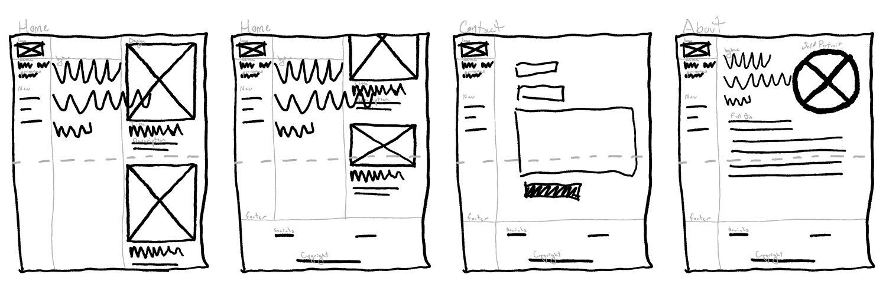
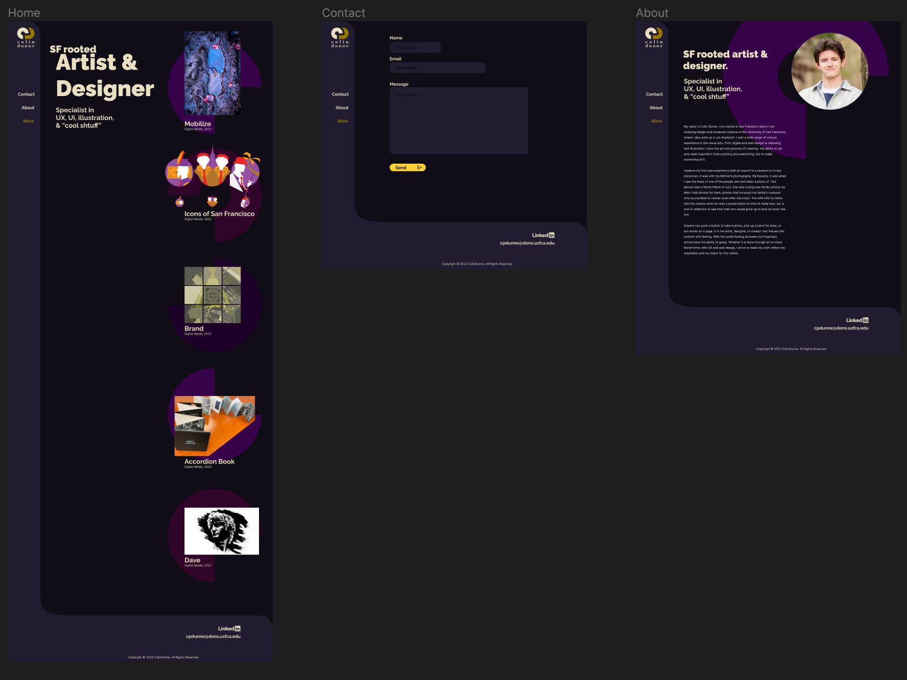

Web Portfolio
Product
A design portfolio featuring my own work formatted for desktop (1440 x 1024)
Goal
While learning HTML, CSS, and JavaScript, produce a website that establishes a brand identity, navigates easily, and demonstrates design skills with the featured work and the website itself.
Brand Research
Museum Visit
I visited the ICA for my research. While there viewing the exhibition work of Jeffrey Gibson, something that struck me was the use of shapes and color found within his style, which is comprised of a mish-mash of elements from his Choctaw and Cherokee heritage with modernist elements/strategies. I think I am especially inspired by the contrast achieved in the color, the overlay of videos, the use of opacity, and the interesting directional shapes. Given that ICA was only showing one exhibition, it was interesting to apply that into thinking of how to implement design elements to make the viewer engaged with content for longer periods of time.
Mood Boarding
Along with the museum visit, I looked for inspiration from a variety of other websites. Gathering imagery that spoke to me on some level through color, composition, or any other design elements, I drafted a mood board.
Starting the Design
Paper Wireframes
I found a strong interest in brutalist design while doing my research. While visually appealing and sometimes fun to interact with, the contrary approach to standard design practices had a tendency for navigation to be unclear to the user. Approaching my initial paper wireframes, I wanted to incorporate some elements while making a strong effort to preserve the integrity of the user experience.
Brand Design
Using the research and mood board I developed, I began to develop a personal brand identity.
My brand planning first started with sketches for the logo and logotype. My initials were used for the logomark and the initial concept for the logotype was using the blackletter typeface Wilhelm Klingspor Gotisch.
This would then progress into a digital version with a vast amount of iterations. The same digital approach was applied to my typography and color; ultimately creating a finalized brand vision.
Digital Wireframes
With the brand established, I was ready to proceed in applying it to my navigation design and create digital wireframes. With these digital versions, there were a few iterations such as the addition of more responses to user interactions through motion. Placeholders for this can be seen on the work page with the rotating different color-changing background shapes (left image below).
Finalizing
Programming
Stepping forward in this project led to a process and steps unique to this project. It is unlike others I've done in the past as I have not programmed sites before. My goal was not only to learn/grow more accustomed to HTML, CSS, and JavaScript, but to execute a product that would withhold its original design and intent.
Final Product
Ultimately, I reached an end result I am proud of. There were some iterations made to the design, the most significant ones were making the header smaller on the "Work" page to put more focus on the design work by giving it more space, adding the project descriptions directly under the titles instead of only appearing on hover, and adding more visual elements to the "Contact" page.